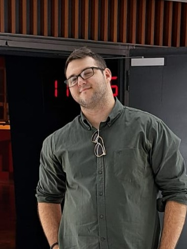
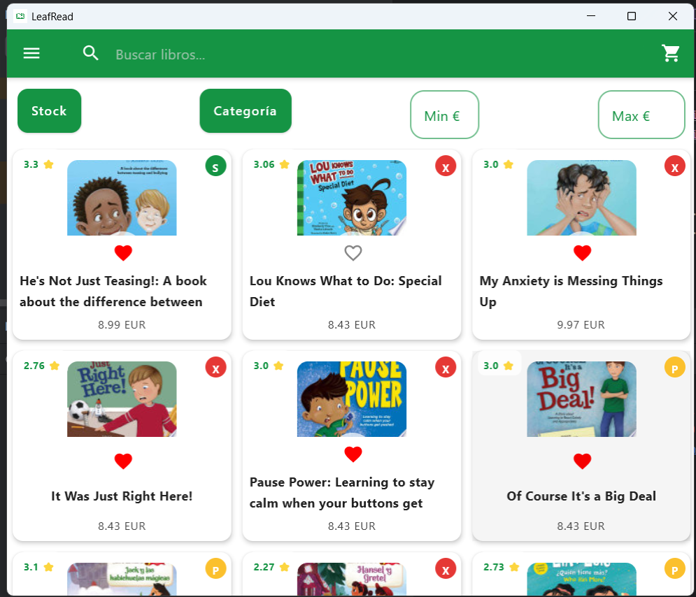
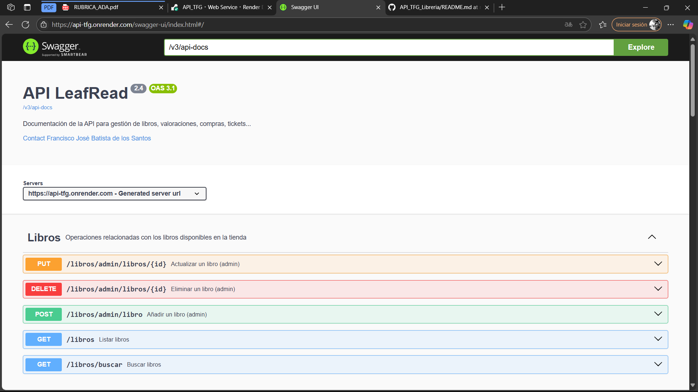
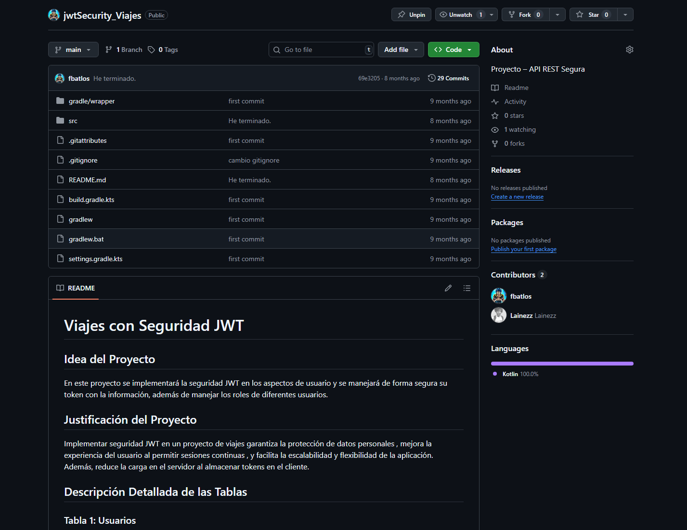
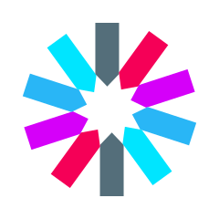
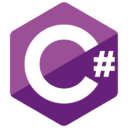
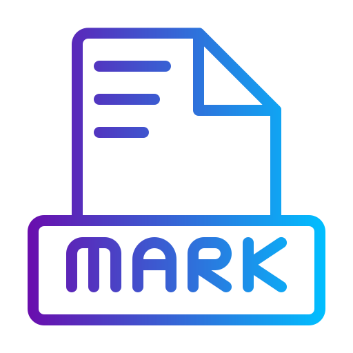
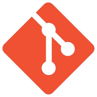
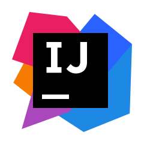
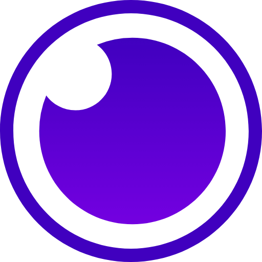

Francisco José Batista
de los Santos
Desarrollo de Aplicaciones Multiplataforma

de los Santos













Soy un joven programador apasionado por la tecnología y el desarrollo de software. Formación en Desarrollo de Aplicaciones Multiplataforma (Actualmente estoy en ingeniería informática), con experiencia en Python, Java, Spring Boot, Kotlin, SQL, Git, HTML, CSS y Jetpack Compose. Destaco por mi capacidad de análisis, resolución de problemas y rápida adaptación a nuevas tecnologías.
Proactivo, con buenas habilidades de
comunicación y trabajo en equipo.